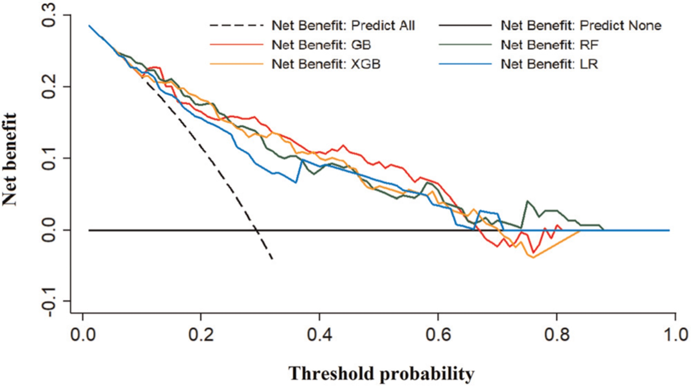

Machine learning for the prediction of acute kidney injury in patients with acute pancreatitis admitted to the intensive care unit
机器学习预测重症监护病房中急性胰腺炎患者急性肾损伤(Cheng et al. 2022)
背景
急性肾损伤（AKI）是急性胰腺炎患者在重症监护病房（ICU）中常见的严重并发症。
发生AKI的急性胰腺炎患者死亡率显著高于未发生者。
目前AKI的诊断依赖血清肌酐升高或尿量减少，但这些指标出现时肾脏损害已发生，缺乏早期预警能力。
目的
建立基于机器学习算法和传统逻辑回归（LR）模型的预测模型，仅使用患者进入ICU时常规采集的临床变量，预测其后续是否会发生AKI。
比较不同模型的预测性能，评估机器学习在该场景下的优势。
研究方法
研究设计与数据来源：
回顾性队列研究，数据来自四川大学华西医院ICU 2015年12月至2019年12月收治的急性胰腺炎患者。
纳入标准：确诊为急性胰腺炎、年龄≥18岁、入住ICU。
排除标准：
入ICU时已诊断AKI；
有慢性肾病史；
胰腺肿瘤、外伤或慢性胰腺炎；
年龄<18岁。
诊断标准：
急性胰腺炎：符合以下三项中至少两项：
典型腹痛；
淀粉酶或脂肪酶升高至正常上限3倍以上；
影像学支持。
AKI：依据KDIGO指南，基于血清肌酐变化或尿量定义。
数据划分与模型训练：
将数据按7:3比例分为训练集（70%）和测试集（30%），避免样本重复使用。
采用10折交叉验证优化模型稳定性。
使用网格搜索（Grid Search）进行超参数调优。
建模方法：
传统模型：逻辑回归（Logistic Regression, LR）
先进行单变量分析筛选P<0.05的变量；
再进行多变量逐步回归（forward stepwise），构建最终LR模型；
建立预测列线图（Nomogram）。
机器学习模型：
选择三种集成学习算法：梯度提升（GB）、随机森林（RF）、极端梯度提升（XGB）。
这些模型具有较高预测精度且具备一定可解释性。
模型评估指标：
主要指标：AUC（曲线下面积）
其他指标：
净重分类改善指数（NRI）
综合判别改善指数（IDI）
决策曲线分析（DCA）——评估临床实用性
结果
患者基本情况：
共纳入488例患者，其中151例（30.9%）发生AKI。
AKI组患者白细胞、中性粒细胞、肌酐、尿酸、BNP、D-二聚体、PCT、CRP等炎症和器官功能指标更高，ICU住院时间更长，28天死亡率更高。
多变量分析结果（LR模型）：
独立预测因子包括：
血清肌酐（OR=1.004, P<0.001）
前降钙素（PCT）（OR=1.024, P=0.004）
自然对数转换的BNP（Ln BNP）（OR=1.010, P=0.013）
模型性能比较（AUC）：
逻辑回归（LR）：0.763
梯度提升（GB）：0.828
随机森林（RF）：0.812
极端梯度提升（XGB）：0.809
所有机器学习模型AUC均高于LR，但差异未达到统计学显著性（P>0.05）
其他评估指标：
NRI 和 IDI：所有机器学习模型均表现出显著的净重分类和判别能力提升（P<0.05）。
决策曲线分析（DCA）：
当阈值概率低于约0.4时，机器学习模型的净收益明显优于LR模型。
表明在临床决策中，机器学习模型能更准确识别高风险患者。

特征重要性分析（以GB模型为例）：
SHAP值分析显示最重要的前5个预测变量为：
血清肌酐
尿酸
前降钙素（PCT）
凝血酶时间（TT）
BNP
提示这些指标在预测AKI中具有关键作用。
结论
本研究成功构建了三种机器学习模型（GB、RF、XGB）和一个传统逻辑回归模型，用于预测急性胰腺炎患者入住ICU后发生AKI的风险。
尽管机器学习模型在AUC上的提升未达统计学显著性，但在净重分类（NRI/IDI）和临床净收益（DCA）方面显著优于传统LR模型。
因此，机器学习方法整体上优于传统建模方式，具备更强的临床应用潜力。
局限性
单中心回顾性研究，样本量相对较小（n=488），可能影响模型泛化能力。
缺乏外部验证数据集，限制了模型的普适性。
部分重要临床变量缺失，如：
尿量动态变化
合并症
慢性用药情况
治疗干预信息
仅使用入ICU时的数据进行预测，未考虑时间序列变化；
- 且未明确AKI诊断的具体时间，因此无法评估“提前预测”的时间窗口。